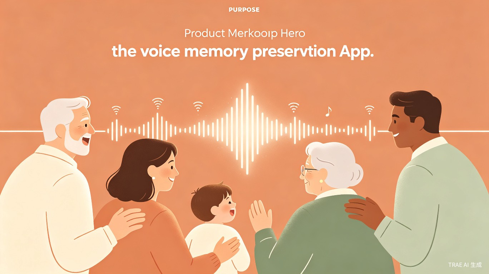
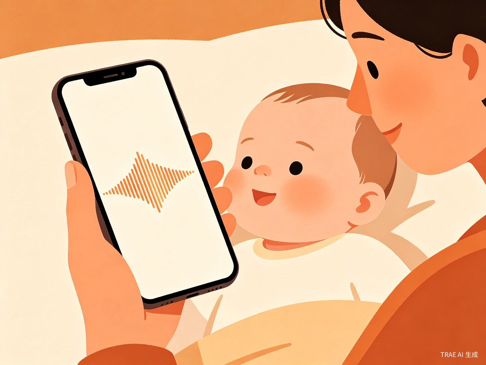
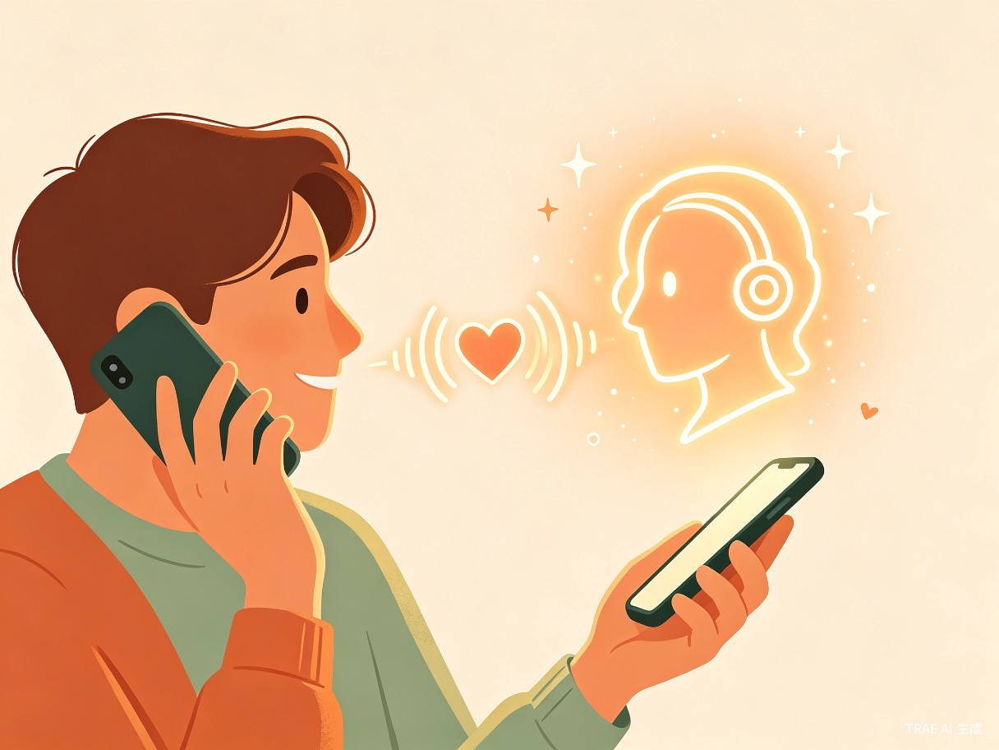
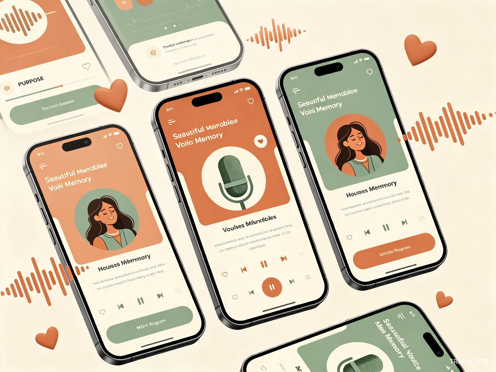

以微信小程序为起点，从"声音留念"单一场景出发，逐步构建覆盖AI对话、时光胶囊、独立APP及实体衍生品的声音记忆生态
声迹的发展遵循"单点验证 → 场景扩展 → 技术升级 → 平台独立 → 生态闭环"的渐进路径。每一阶段都在前一阶段验证成功的基础上自然延伸，确保资源投入与市场需求精准匹配。

以"宝宝声音成长档案"为唯一核心场景，打造极简的录音-保存-分享闭环。所有功能设计围绕"低门槛"和"社交裂变"展开。
3秒内开始录制，实时波形可视化，自动AI降噪优化
按月份自动归档，支持标签筛选（第一次叫妈妈、学说话等）
邀请家人加入家庭空间，多人共同记录和查看
自动生成精美分享海报，支持朋友圈/微信群裂变传播
在基础录音功能之上，引入"时间"维度，让用户可以给未来发送声音留言。这一功能天然具备仪式感和情感价值，能显著提升用户粘性和品牌认知。
录制一段给未来的声音，设定解锁日期（如宝宝18岁生日）
自动在重要日期（生日、周岁）推送历史声音回顾
预设关键成长节点，自动提醒家长录制对应声音
解锁无限存储、高清音质、专属时光胶囊主题等高级功能

引入AI语音克隆和大语言模型技术，实现"与亲人的声音对话"。这是产品从"记录工具"向"情感科技"跃迁的关键一步，也是最具技术壁垒和情感冲击力的功能。
基于历史录音样本，克隆宝宝/家人的专属音色（需严格授权）
用文字输入与克隆声音进行自然对话，AI生成回复并用克隆声音朗读
输入文字，用亲人克隆声音生成节日祝福语音（生日、春节等）
严格的授权验证、AI合成标识、使用范围限制，确保合法合规

当微信小程序验证成功、用户规模达到10万+时，推出iOS/Android独立APP。独立APP能提供更优质的音频体验、更丰富的功能和更强的品牌独立性。
更高质量的录音和播放，支持后台录音、蓝牙耳机等
支持离线录音和本地播放，无网络也能记录珍贵声音
小程序与APP数据互通，用户可自由选择使用场景
原生推送能力，纪念日提醒、家人新录音通知更及时
将数字声音记忆转化为可触摸、可收藏的实体物品，满足用户更深层的情感表达和礼物赠送需求。这一阶段的毛利率高，且能形成独特的品牌印记。
将声音波形制作成精美艺术画框，可悬挂装饰
项链、手链等饰品，将声音波形雕刻在金属表面
将精选声音刻录成黑胶唱片，复古仪式感满满
节日限定礼盒，含声波画+首饰+数字会员卡组合
每一阶段必须在上一阶段验证成功后才启动。验证标准包括：用户规模达标、核心功能使用率健康、用户反馈正向、商业模式初步验证。
| 阶段 | 验证指标 | 达标标准 | 未达标应对 |
|---|---|---|---|
| 微信小程序 | 注册用户、留存率、分享率 | 1万用户，40%次日留存 | 优化分享机制，调整获客渠道 |
| 时光胶囊 | 会员转化率、功能使用率 | 5%付费转化率 | 调整定价策略，增加免费试用 |
| AI模拟对话 | 克隆使用率、对话满意度 | 30%用户尝试克隆 | 优化克隆效果，简化操作流程 |
| 独立APP | 迁移率、APP留存 | 20%小程序用户迁移 | 增强APP独占功能吸引力 |
| 实体衍生品 | 销售额、复购率 | 月销售额10万+ | 精简SKU，聚焦爆款单品 |
无论发展到哪个阶段，用户声音数据仅在本应用内存储和使用的核心承诺不变。每一阶段新增功能都必须通过隐私影响评估，确保不突破已建立的数据安全边界。
从微信小程序到实体衍生品，始终保持"温暖、简约、以声音为中心"的品牌调性。视觉风格以暖橙色和深绿色为主，波形元素贯穿所有产品形态。
成为中国家庭声音记忆的默认选择
让每一个家庭的珍贵声音都有处可存、有人可传。从宝宝的第一声啼哭，到祖辈的方言童谣，再到跨越时空的AI对话——声迹守护的不仅是声音，更是人与人之间最原始、最真挚的情感连接。